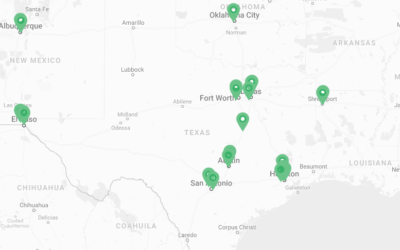

Next Generation
The Next Generation program engages, trains and organizes millennials throughout Texas to foster community, build power for reproductive justice and create a pipeline of young leaders.
Learn MoreNeedabortion.org
Pregnant? Scared? Visit NeedAbortion.org for accurate information about abortion in Texas, clinic locations and financial and transportation resources.
Learn MoreCrisis Pregnancy Centers
CPCs are fake women’s health centers that exist mainly to keep pregnant people from accessing abortion services. They disguise themselves as health care facilities, but offer limited and often medically inaccurate services.
Learn MoreThe Legislature
We work at the Texas Capitol to fight back against dangerous abortion restrictions and fight for a future where every Texan has access to abortion care free from shame, stigma and political interference.
Learn MoreSince 2011, the Texas Legislature has passed 16 abortion restrictions, all designated to stigmatize abortion and put essential health care out of reach.
Texas Legislature
43% of Texas women live in counties with no abortion clinic
2014 Guttmacher Institute State Facts About Abortion